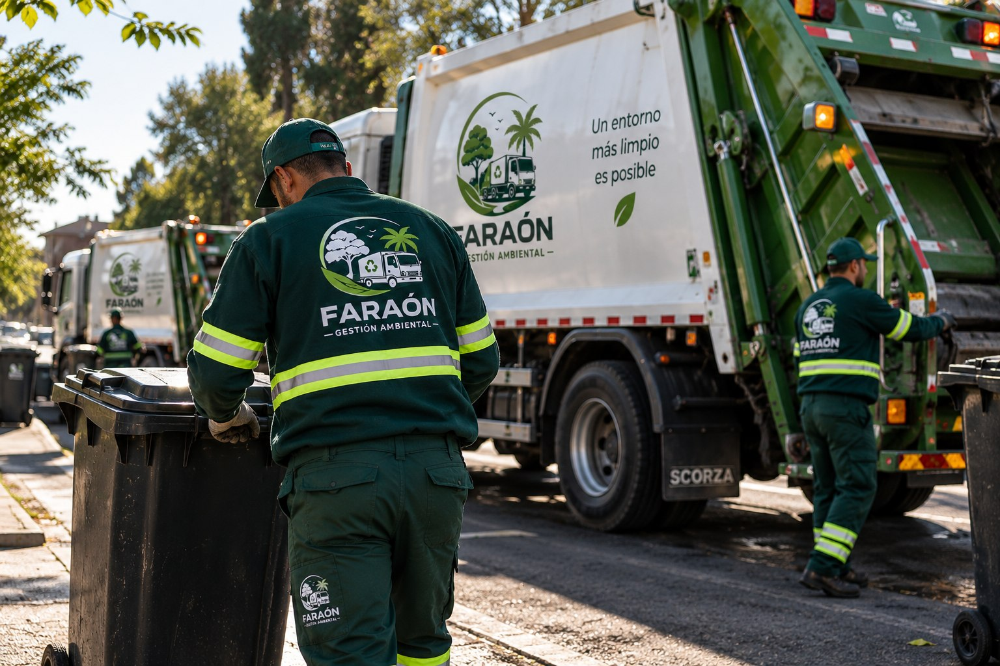

Somos la división de gestión ambiental de Faraón, con base en Monte Grande. Recolección, disposición y espacios verdes con mirada responsable.
En Faraón Gestión Ambiental contamos con 18 años de trayectoria en el sector, desarrollando una estructura operativa sustentada en la experiencia, el conocimiento técnico y la capacidad de respuesta.
Nuestro principal diferencial radica en la gestión integral y el mantenimiento de nuestra propia flota de camiones, maquinaria y equipos. Esta capacidad nos permite mantener un control directo sobre nuestros recursos, optimizar su disponibilidad y brindar continuidad operativa aun frente a servicios de alta exigencia.
Trabajamos bajo una premisa clara: la confiabilidad de un servicio comienza en la solidez de su operación. Por eso, combinamos infraestructura, mantenimiento permanente, personal capacitado y atención las 24 horas, preparados para responder ante las necesidades de cada cliente.
Nuestra visión es consolidarnos como un socio estratégico para empresas, industrias y organismos públicos, aportando soluciones eficientes, confiables y sostenibles, con capacidad para acompañar operaciones de distinta escala en Argentina y la región.

Prácticas responsables en cada recolección y disposición final, para cuidar el entorno donde trabajamos.
Cumplimos la frecuencia y los horarios acordados, para que la gestión de residuos nunca sea un problema.
Flota propia con mantenimiento constante, para dar un servicio seguro y sin demoras.